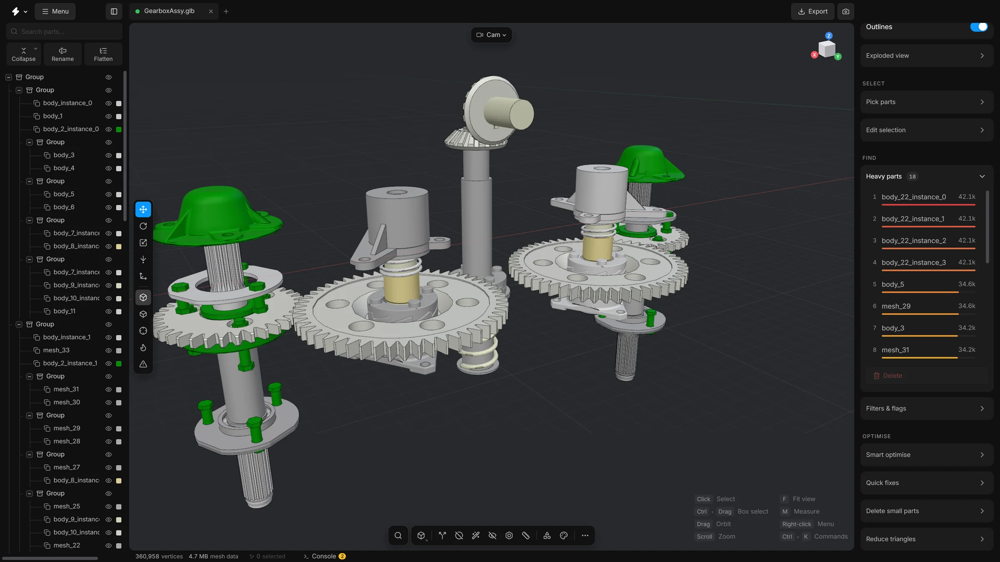

The window
A tour of the screen: the top bar and tabs, the parts tree, the 3D view and its toolbars, the cards on the right, the drawers, the status bar and how to resize it all.
The window has four areas: a top bar, a left sidebar, the 3D view in the middle (called the viewport) and a right sidebar. A thin status bar runs under the viewport.


When the app starts, a short splash screen shows the version and what the app is doing, then the window fades in. You can switch the splash off under Settings, General.
Top bar
- The app’s mark
- At the far left. Click it for the version number, what is new, links to the source code and to report a problem, and Help & docs.
- Menu
- The file commands: New scene, Open file…, Show inbox folder, Import into scene…, Save scene…, Export…, Revert to source…, Settings…, Keyboard shortcuts, Claude mode, Welcome screen and Quit app. Scene settings… and Help & docs are not in the menu; they are in the search.
- Sidebar button
- After Export. Shows or hides the left sidebar. When the sidebar is hidden, the button stays where it is.
- Scene tabs
- One tab for each open scene, and a
+to start a new one. See Scene tabs. - Export
- Right after Menu. Writes the model to a file for another program. See Export.
- Screenshot
- Not a button of the top bar. Run Screenshot (share, copy, download) or Turntable video… from the search, or Save screenshot… from the right-click menu of the empty view, under More. See Screenshots.
Left sidebar
It shows the parts tree: every part of the model, arranged in groups, with a search field and a row of seven icon buttons above it (Collapse, Rename, Flatten, Transform, Recentre, Show in list and Scroll to top; the names show when the pointer rests on a button). Show in list scrolls the tree to the selected part and opens the groups it is in; Scroll to top goes back to the first row. Transform shows a card with position, rotation and size at the foot of the sidebar. It works on several selected parts at once (see Move, rotate, scale) and takes its own room under the tree. The library of parts you can add is not in this sidebar any more. It is a drawer under the viewport (see below).
Viewport
- Tool strip, left edge
- At the top, the mode button: Model, or the points, edges and polygons of Edit mesh. Then the selection tool, which is the blue one, and the move, rotate and scale tools, which show grey when they are on. After them come Measure, Draw lines, notes mode (Notes) and Dynamic place (D), and then one View button for solid, wireframe, X-ray and heatmap (a click turns the Wireframe on and off, holding it or a right-click lists all four). The Clay and CAD looks are in the Shading card on the right.
- Camera pill, top left
- A small round pill with only an icon: a camera for the free camera (Cam), or a cube with the face looked at for Top, Front and Side. Click it to switch between Cam, Top, Front and Side.
- Mode pills, top centre
- Small pills show a mode that is on: Isolated, CAD edges, CAD edit, Exploded, Measure, notes, animation and Snap. A click on Isolated, Exploded, Measure or CAD edit leaves that mode.
- View cube, top right
- A small cube that turns with the model. Click a face or an axis dot and the view turns there.
- Toolbar, bottom centre
- Search, the recent tools button (a click runs the last tool again; hold it or right-click it for the last few), add a shape, Split, Remove holes, Smart fit, Remesh, Select hidden parts, Fasteners, Animate, Library, Materials, and
…for the list of all commands. A right-click on a button of a toolbar opens that list at the pointer. - Edit mesh bar, right edge
- A vertical bar that appears under the view cube while Edit mesh is on: the gizmo’s axes (World, Local, Normal), Loops, and the buttons that change the picked pieces. How a click picks (Click, Box, Brush) is chosen with the selection tool button on the left, not here. The tool strip shows Points, Edges and Polygons as three buttons then. See Edit mesh.
- Shortcut tips, bottom right
- A faint list of what the mouse and keys do right now. It changes when you select something.
- Command cards, bottom left
- A tool with settings, such as Remove holes, Smart optimise, Reduce triangles, Align to floor, Align parts or Dynamic place, opens as a card over the viewport. Enter runs it and Esc puts it away.
Right sidebar
At the top is Properties. With nothing selected it describes the whole scene. With a selection it describes that: the name, the material, the triangle count with a bar that shows its share of the scene, and its number of vertices, size, share of the model and volume (for the whole scene: parts, vertices, size and mesh data). Under it is the selection bar, and then cards you open and close by clicking their title. A card slides open and shut. Properties is always open; every other card starts folded, and the ones you open or close are remembered.
- Shading
- Every look for the Clay and CAD views as a small picture: Clay, Porcelain, Steel and Red wax, and the CAD looks Ceramic, Light and Mono. Click one to choose it and turn the view on. Click the lit one again to go back to Solid. The CAD lines switch draws a fine dark line on the edges of every part. See Colours and materials and View modes.
- Shading angle
- A row at the foot of the Properties card, under the material, for the selected parts: up to this angle between two faces the surface is shaded smooth, and past it the edge stays sharp. 0° is flat and 180° is fully smooth. Only the shading changes, not the shape. Type a number, or drag it sideways. It is dimmed when nothing is selected.
- Selection bar
- Not a card: it sits under Properties and stays at the top while the cards scroll. It counts the selected parts and has icon buttons for All, Invert, Similar, Hide, Isolate and Delete. See Select parts.
- Quick fixes
- Empty parts, Duplicates, Degenerate, Floating…, Empty groups and Normals, one press each.
- Exploded view
- Moves the parts apart. See Exploded view.
- Heavy parts, Filters & flags
- Heavy parts lists the heaviest parts (with a small count of how many there are). Filters & flags marks low-poly parts and slivers.
- Measurements
- Only shown while there is a measurement.
- Pick parts
- Sets how close a part has to look to the selected ones to count as similar.
- Delete small parts
- The size threshold, a look at what it would catch, and the button that deletes it. See Delete small parts.
- Notes, Photo mode, Scene
- At the bottom of the sidebar, in that order. Scene holds the display units, up axis, scene scale, grid cell size, shadows and the background. An Animation card follows while Animate is on.
Tools with their own settings, such as Align to floor, Find stacked copies, Smart optimise and Reduce triangles, are not cards in the sidebar. They open over the viewport, from the toolbar, the list of all commands or the search.
Status bar
Under the viewport: the number of vertices, the size of the mesh data, a Tasks chip (a small ring that shows what is running, with a list of the jobs and a way to cancel them), the frame rate, and a Console button. The numbers of parts and triangles are in Properties, and the number of selected parts is in the selection bar.
Drawers
Four panels slide up from the bottom of the viewport and take turns: only one is open at a time. Drag the top edge of a drawer to change its height. Library, Materials and Animate share one height unless Same height for every dock is switched off under Settings, General; the Console keeps its own. The Library and the Materials drawer can also pop out as floating windows over the view. Then they do not take turns, and both can be open side by side.
- Library
- The parts you can add. Opened with the Library button on the bottom toolbar or ShiftL. See The library.
- Materials
- Every material in the scene. Opened with ShiftM. See Colours and materials.
- Animate
- The timeline. Opened with ShiftA or the Animate button on the bottom toolbar. See Animate.
- Console
- A log of everything the app has done, with filters for information, warnings and errors and a button to copy it. Opened with the backtick key or the Console button in the status bar.
Make room
Each sidebar has a drag handle on its inner edge. A thin line shows when you rest the pointer on it for a moment.
- Drag a handle to make a sidebar wider or narrower. Double-click it to put the width back.
- The left sidebar cannot be narrower than 220 pixels and the right one not narrower than 240. Narrower than that, buttons and labels would wrap or be cut off.
- The window itself cannot be smaller than 960 by 560 pixels. In a smaller window the app scrolls instead of squeezing the panels.
- Use the sidebar button in the top bar to hide the left sidebar.
- On a narrow window, buttons of the bottom toolbar fold away into the
…list.
Help
Press F1 to open the help inside the app. It holds the same articles as this website and works without an internet connection. See The help window.